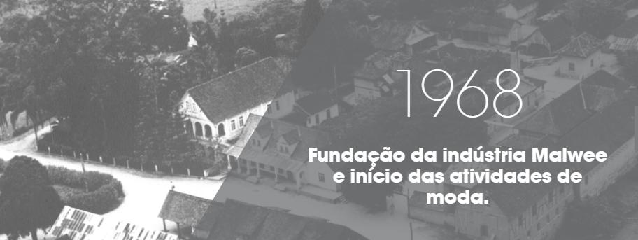
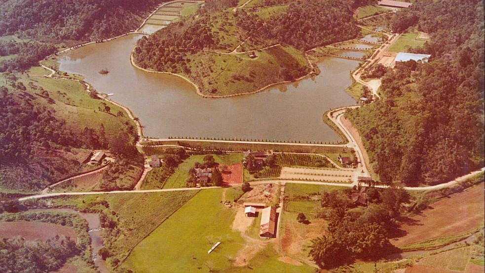
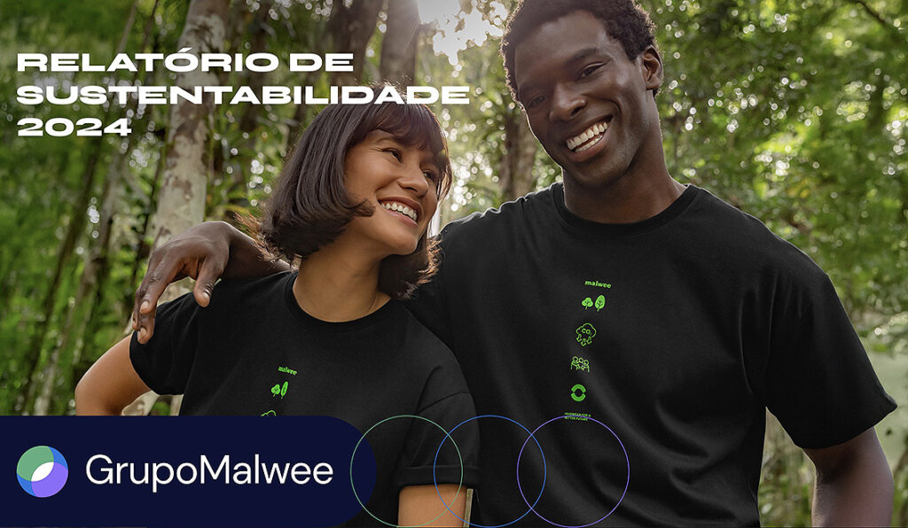
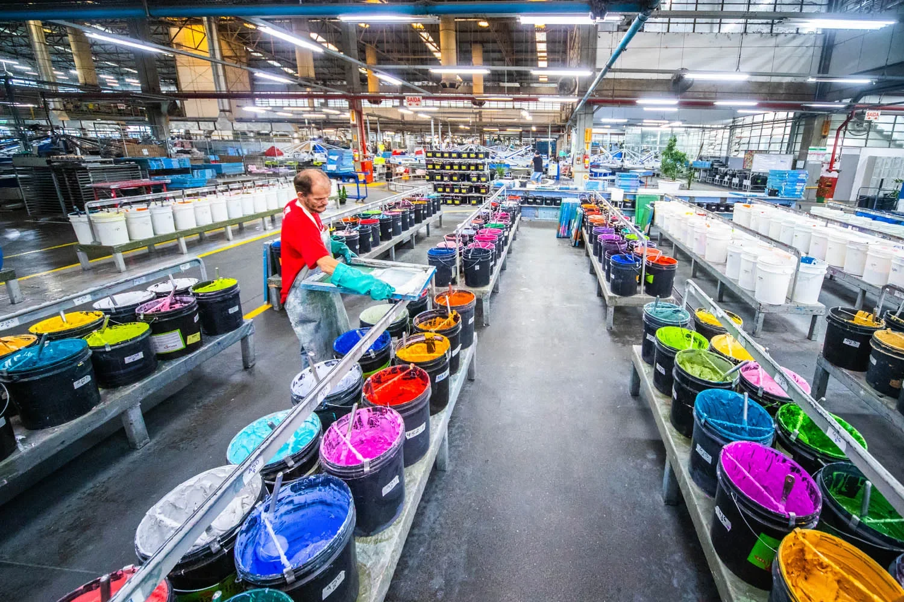
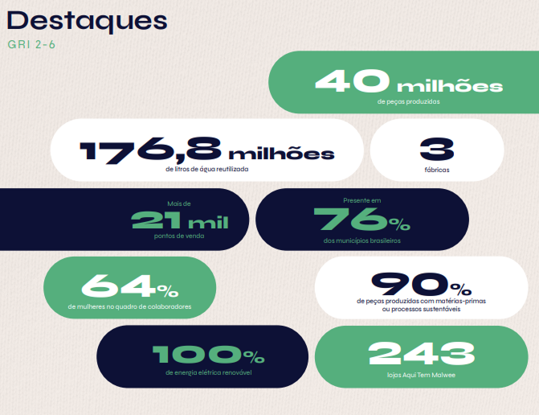

Preparação e onboarding: Conheça uma das empresas mais sustentáveis e eficientes da moda brasileira em Jaraguá do Sul.
Role a página para viajar no tempo

Fundada por Wolfgang Weege em Jaraguá do Sul (SC). O que começou como uma pequena estrutura logo demonstraria seu potencial de expansão.

A empresa começa a verticalizar agressivamente seus processos, integrando desde a fiação até a costura, garantindo qualidade e fluxo contínuo.

Pioneirismo no tratamento de efluentes e conservação ambiental com a consolidação do Parque Malwee, integrando indústria e natureza.

Um dos maiores grupos de moda do Brasil, aplicando Lean Manufacturing de ponta para lidar com alta complexidade de portfólio de forma sustentável.

Pioneira em moda sustentável no Brasil, a Malwee possui metas agressivas de ESG (Environmental, Social, and Governance).